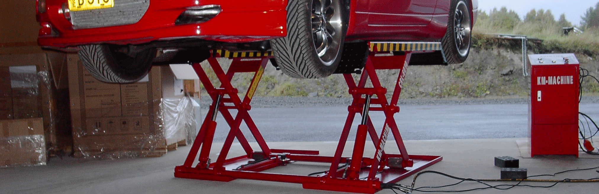

Keventimet
Korjaamokoneessa nyt myös saatavilla laadukkaat keventimet moniin eri tarpeisiin.
Katso tuotteetPilarinostimet
Korjaamokoneen kaupasta löydät valikoiman laadukkaita Hauvrex autonostimia. Hauvrexin 4 tn kaksipilarinostimet HTL-2140 sekä HTL-2340 ovat jo pitkään olleet erittäin suosittuja ja nyt niiden rinnalle ovat tulleet myös Hauvrex-tuotemerkin järeät 5 tn ja 6 tn nostavat kaksipilarinostimet.
Katso tuotteetRengaskoneet
Mallistostamme löydätte rengaskoneet kaikkiin tarpeisiinne. CRL-810 ja CRL-6112 soveltuvat erinomaisesti peruskäyttöön. Raskaampaa kalustoa varten olemme valinneet tuotevalikoimaamme rengaskoneet CRL-568:n ja CRL-598:n. Tämän lisäksi valikoimassamme on tietysti myös erinomainen renkaiden tasapainotuskone CRL-966.
Katso tuotteetSaksinostimet
Saksinostimet ovat kuuluneet Korjaamokoneen perusvalikoimaan jo pitkään. Valimoimasta löytyy tuotteet joka tarpeeseen. Esimerkiksi Hauvrexin siirrettävä saksinostin 6128 on laadukas mutta silti vielä varsin edullinen vaihtoehto peruskäyttöön.
Katso tuotteetKiitos, että olet asiakkaamme. Saat asiakaspalvelumme kiinni numerosta 040 563 7605, mikäli sinulla on kysyttävää!